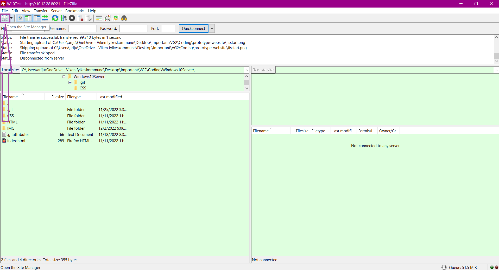
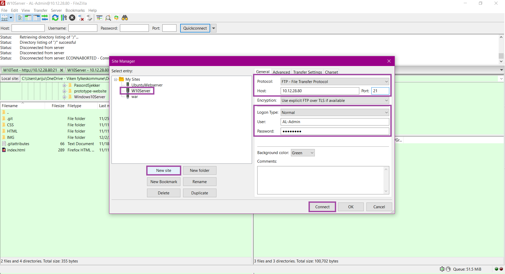
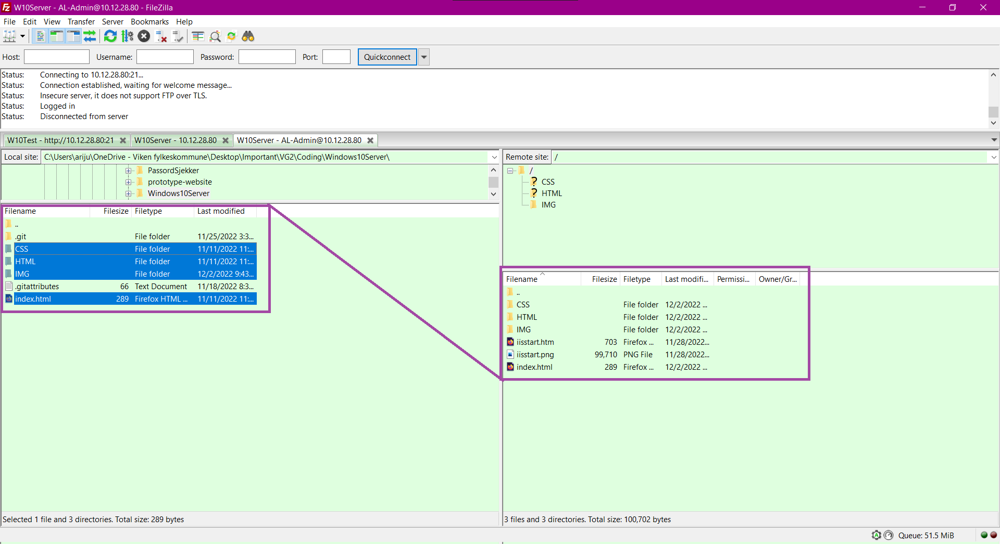
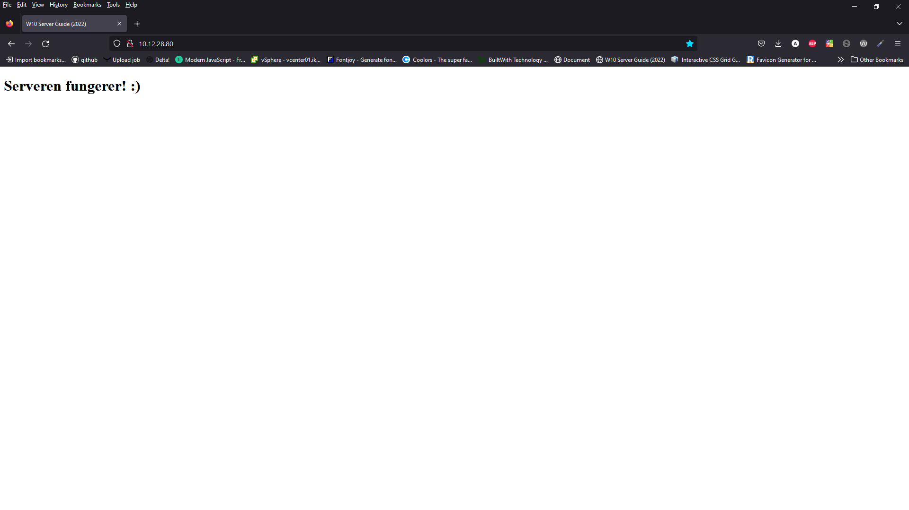

LAURIN LIMITED GUIDEBOOK ©
HVORDAN KOBLE TIL OG BRUKE FILEZILLA
Lær hvordan man navigerer gjennom filezilla og hvordan man kobler den opp til serveren. Vi må bruke filezilla for å overføre filer fra hovedpcen til serveren.
Nå kan vi koble til filezilla via FTP, så vi kan sende over filene fra vår egen PC. Dette gjør vi ved å åpne filezilla på din hoved PC, så trykker du på ikonet som ligger under «File».
Her så skal du lage en ny server kobling, så trykk på «New Site», og gi det et navn så du husker hvilken kobling det er. Så ser du til høyre side hvor du da skal velge «FTP – File Transfer Protocol» i «Protocol:» boksen. Så skriver du inn IPen til web serveren din, og legg inn port 21. «Encryption» kan du la stå som den er nå på bildet, og «Logon Type» skal være «Normal». Her så skriver du inn innloggings informasjonen til server admin kontoen. Deretter kan du trykke på «Connect», som da skal koble deg til serveren.
Her kan du se både fil strukturen til hoved pcen og til serveren (høyre boks). Naviger gjennom filstrukturen på hoved pcen til hvor filene til nettsiden din er, og så er det bare så enkelt som å velge filene du vil sende over og dra de over til den høyre boksen som er server filene.
Nå kan du åpne en nettleser og søke opp IPen til web serveren, så finner du nettsiden du har akkuratt lagt inn.
Tilbake til hjemmesiden?